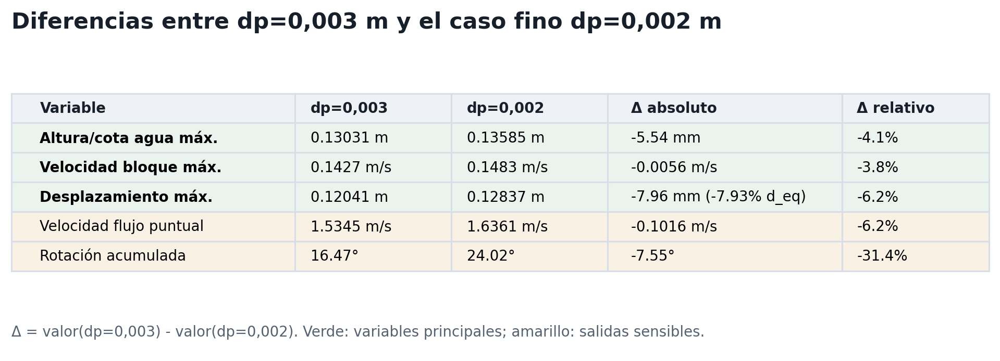
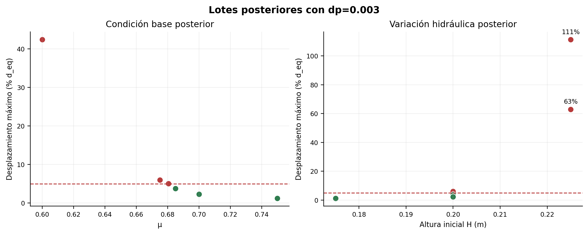

SPH y benchmark hidraulico
Los testcases oficiales de DualSPHysics y los benchmarks SPHERIC justifican usar casos dam-break como verificacion hidraulica del solver y del postproceso. En esta pagina se usa para validar el entorno, no el bloque.
dp operativoEsta página documenta el proceso de selección de la resolución de trabajo del modelo SPH-Chrono. El análisis compara variables continuas al reducir dp, tomando dp = 0,002 m como referencia fina y evaluando qué tan cerca se comporta dp = 0,003 m.
SPH no trabaja con malla fija: usa partículas. El parámetro dp es el espaciamiento inicial entre ellas y opera como indicador directo de resolución espacial.
La comparación se concentra en variables continuas: desplazamiento del bloque, velocidad del bloque, altura o cota de agua, velocidad puntual del flujo y rotación. La decisión prioriza las variables que mejor representan la respuesta global del sistema.
La decisión final combina dos criterios: cercanía al caso fino y viabilidad computacional. dp = 0,003 m se adopta como resolución operativa porque se mantiene suficientemente cerca de dp = 0,002 m en las variables principales y permite ejecutar campañas de simulación a un costo razonable.
En un análisis CFD clásico, al refinar la discretización las variables tienden a converger hacia un valor asintótico, lo que permite estimar orden de convergencia, extrapolación de Richardson y una banda tipo GCI.
En este modelo SPH se reporta una evaluación práctica de sensibilidad: cuánto cambian los máximos y las curvas temporales al aproximarse al caso de referencia. La clasificación estable/fallo se usa posteriormente, como aplicación del modelo a la condición de inicio de movimiento del bloque.
La convergencia se corrió repitiendo el mismo problema físico y cambiando solo la resolución dp. Esto permite atribuir las diferencias observadas al refinamiento de partículas, no a cambios de geometría, forzante o contacto.
| Característica | Valor usado |
|---|---|
| Tipo de flujo | Dam-break / flujo transitorio tipo tsunami |
| Altura inicial de agua | H = 0,20 m |
| Bloque | BLIR3.stl, escala 0,04 |
| Diámetro equivalente | d_eq ≈ 0,1004 m |
| Masa | m = 1,0 kg |
| Fricción bloque-suelo | μ = 0,50 |
| Pendiente del canal | 1:20 |
| Orientación del bloque | rot_z = 0° |
| Tiempo simulado | ≈ 10 s |
| Resoluciones comparadas | dp = 0,010 a 0,002 m |

El análisis toma dp = 0,002 m como referencia. Para cada variable se revisan dos aspectos: la diferencia en el valor máximo y el parecido de la forma temporal completa con el caso fino.
La banda de ±5% en esta sección mide distancia entre resoluciones; no debe confundirse con el umbral de movimiento del bloque que se define más adelante. Los porcentajes normalizan variables con unidades distintas, pero se reportan también diferencias absolutas para ver la magnitud física del cambio.
| Variable | Máximo en dp = 0,003 vs dp = 0,002 | Curva temporal vs dp = 0,002 | Lectura |
|---|---|---|---|
| Altura / cota de agua | −5,54 mm (−4,1%) | 4,6% | Dentro de la banda. Es la evidencia hidráulica más limpia. |
| Velocidad máxima del bloque | −0,0056 m/s (−3,8%) | 5,6% | Máximo dentro de ±5%; forma temporal apenas sobre la banda, pero cercana. |
| Desplazamiento máximo | −7,96 mm (−6,2%; −7,93% de d_eq) | 5,2% | Levemente fuera. Se acepta con cautela porque acumula contacto e historia temporal. |
| Velocidad de flujo puntual | −0,102 m/s (−6,2%) | 10,0% | Se reporta como salida sensible; no es base principal de la decisión. |
| Rotación acumulada | −7,55° (−31,4%) | 23,6% | Variable observada; no define por sí sola la resolución de trabajo. |

valor(dp=0,003) - valor(dp=0,002). El signo negativo indica que el máximo con dp=0,003 fue menor que el caso fino.
dp = 0,002 m. Panel A: diferencia en el valor máximo. Panel B: diferencia en la forma de la curva temporal.dp = 0,002 m.
dp = 0,002 m. La estabilización es práctica: no todas las curvas son monótonas, pero la aproximación es clara en las variables de decisión.
No todas las salidas cierran igual. La velocidad de flujo en un gauge puntual y la rotación acumulada del bloque muestran mayor sensibilidad al refinamiento. Se muestran explícitamente como límite del análisis, no como base para fijar dp ni para clasificar el movimiento.


dp = 0,003 a dp = 0,002 m aumenta notablemente el número de partículas, la memoria requerida y el tiempo de cómputo. dp = 0,002 m es útil como referencia de verificación, no como resolución de campaña.Lectura defendible: dp = 0,003 m se adopta porque las variables principales quedan dentro o cerca de la banda respecto del caso fino, mientras que dp = 0,002 m implica un costo que hace inviable una campaña completa. Los casos críticos se verifican puntualmente con la resolución fina.
Con dp = 0,003 m se estudia la estabilidad del bloque. El término frontera designa el intervalo de fricción μ en el que, bajo la misma geometría y el mismo forzante, el bloque pasa de no superar a superar el umbral de movimiento.
El umbral operacional de movimiento es D_max > 5% d_eq, donde D_max es el desplazamiento máximo del bloque y d_eq su diámetro equivalente. Este 5% es el criterio físico del análisis de estabilidad; la banda ±5% de la sección anterior es solo una referencia de comparación entre resoluciones. La rotación se informa aparte como variable observada.

dp=0.003 m, la condición base queda acotada entre μ=0.68050 y μ=0.68075.
dp = 0,002 m, los casos cercanos al umbral cambian de clase. Esto se reporta como sensibilidad de la frontera a la resolución.Adoptado dp = 0,003 m, se ejecutaron lotes de simulación para aplicar la resolución a la campaña de estabilidad. Estos lotes construyen el mapa de respuesta del bloque y alimentan la etapa paramétrica con H, μ y m* como variables de entrada. Los casos cercanos a condiciones críticas se verifican puntualmente con dp = 0,002 m.

D_max = 5% d_eq. Los casos aparecen clasificados como estables o de fallo.Antes de abrir la campaña productiva se realizaron tres verificaciones independientes: reproducción de un caso hidráulico conocido, sanity del contacto bloque-suelo sin forzante hidráulico relevante y comparación con un balance analítico de primer orden.

CaseDambreakVal2D. RMSE del frente: 0,257 m; error relativo final: 3,42%. El alcance es estrictamente hidráulico: instalación, GenCase, DualSPHysics, GPU y postproceso de gauges.
d_eq, bien bajo el umbral del 5%, sin fuerza SPH local relevante.
Ψ = F_motriz / F_resistente aplicado a piloto y batch2. Escala logarítmica para evitar que los casos de desplazamiento extremo oculten los cercanos al umbral. No hay contradicciones fuertes entre la banda analítica y la clase SPH en los casos con datos hidráulicos útiles.Estas tres verificaciones apuntalan la defensibilidad del pipeline sin reclamar validación experimental del bloque: son controles independientes que responden preguntas distintas —hidráulica base, contacto inicial y coherencia física de orden de magnitud.
| Lote | Caso | H (m) | μ | Pendiente | Clase | Despl. | Rot. |
|---|---|---|---|---|---|---|---|
| batch2 | batch2_h0175_mu0680 | 0.175 | 0.6800 | 1:20 | ESTABLE | 1.23% | 4.56° |
| batch2 | batch2_slope10_mu0600 | 0.200 | 0.6000 | 1:10 | ESTABLE | 1.50% | 7.60° |
| batch2 | batch2_slope10_mu0650 | 0.200 | 0.6500 | 1:10 | ESTABLE | 1.42% | 7.44° |
| batch2 | batch2_base_mu0675 | 0.200 | 0.6750 | 1:20 | FALLO | 5.99% | 5.33° |
| batch2 | batch2_base_mu0685 | 0.200 | 0.6850 | 1:20 | ESTABLE | 3.78% | 4.76° |
| batch2 | batch2_base_mu0700 | 0.200 | 0.7000 | 1:20 | ESTABLE | 2.31% | 4.87° |
| batch2 | batch2_h0225_mu0680 | 0.225 | 0.6800 | 1:20 | FALLO | 111.28% | 16.89° |
| batch2 | batch2_h0225_mu0720 | 0.225 | 0.7200 | 1:20 | FALLO | 62.87% | 13.39° |
| piloto | prod_pilot_fail_low_mu | 0.200 | 0.6000 | 1:20 | FALLO | 42.38% | 10.68° |
| piloto | prod_pilot_slope_check | 0.200 | 0.6800 | 1:10 | ESTABLE | 1.42% | 7.43° |
| piloto | prod_pilot_frontier | 0.200 | 0.6806 | 1:20 | FALLO | 5.02% | 5.08° |
| piloto | prod_pilot_stable_high_mu | 0.200 | 0.7500 | 1:20 | ESTABLE | 1.23% | 4.46° |
| piloto | prod_pilot_stronger_hydraulic | 0.250 | 0.3000 | 1:20 | FALLO | 1341.54% | 55.78° |
Sin un experimento físico propio del bloque, la tesis se plantea como verificación numérica por capas: sensibilidad de resolución, benchmark hidráulico externo, sanity de contacto y comparación analítica de orden de magnitud. Cada capa responde una pregunta concreta y delimita el alcance de la interpretación.
| Capa | Qué permite afirmar | Límite de interpretación | Base de literatura |
|---|---|---|---|
Convergencia / sensibilidad de dp | Las variables continuas principales se estabilizan en el rango fino; dp = 0,003 m es una resolución operativa defendible. | La clasificación estable/fallo se interpreta con cautela en zonas cercanas al umbral. | Richardson/Roache-GCI; tutorial NASA WIND sobre refinamiento espacial. |
| Benchmark hidráulico | La instalación local de GenCase/DualSPHysics/GPU/postproceso reproduce un dam-break de referencia. | El contacto, la fricción y el movimiento del bloque requieren capas adicionales. | Testcases oficiales DualSPHysics; benchmarks SPHERIC de dam-break. |
| Sanity de contacto | El bloque queda bajo el umbral durante el acomodo inicial sin forzante hidráulico relevante. | El movimiento bajo flujo tipo tsunami se estudia en los lotes productivos. | Acoplamiento DualSPHysics-Chrono; documentación de cuerpos rígidos y contacto. |
| Comparación analítica | Los casos SPH son coherentes con un balance de arrastre, peso, pendiente y fricción en orden de magnitud. | El balance analítico opera como contraste físico; la respuesta dinámica detallada la entrega SPH-Chrono. | Nott/Nandasena para bloques costeros; Bressan; Iwai & Goto; advertencias de Cox et al. |
Los testcases oficiales de DualSPHysics y los benchmarks SPHERIC justifican usar casos dam-break como verificacion hidraulica del solver y del postproceso. En esta pagina se usa para validar el entorno, no el bloque.
El marco clasico de refinamiento se toma de Richardson/Roache-GCI, resumido por el tutorial de NASA WIND. En SPH se adapta usando dp como escala de resolucion y evaluando variables continuas antes de hablar de estabilidad.
DualSPHysics documenta la integración con Project Chrono para cuerpos rígidos y contacto. Por eso el chequeo de contacto se formula verificando que el bloque permanezca bajo el umbral durante el acomodo inicial.
Nandasena, Paris & Tanaka plantean balances de fuerzas para inicio de movimiento; Bressan et al. muestran experimentalmente la influencia de profundidad, velocidad, peso, forma y orientación; Iwai & Goto refuerzan la importancia de casos movidos/no movidos; Cox et al. advierten que esos balances deben usarse con límites claros. Aquí se usan como coherencia física.
Conclusión defendible: el modelo se verifica numéricamente por resolución, se contrasta con un benchmark hidráulico externo, se revisa con un sanity de contacto y se compara con balances analíticos. La frontera reportada está condicionada a dp = 0,003 m, geometría fija, criterio de desplazamiento y parámetros de contacto utilizados.
dp implica mayor resolución y mayor costo computacional.D_max > 5% d_eq.μ donde cambia la respuesta estable/falla para una resolución y condición física dadas.